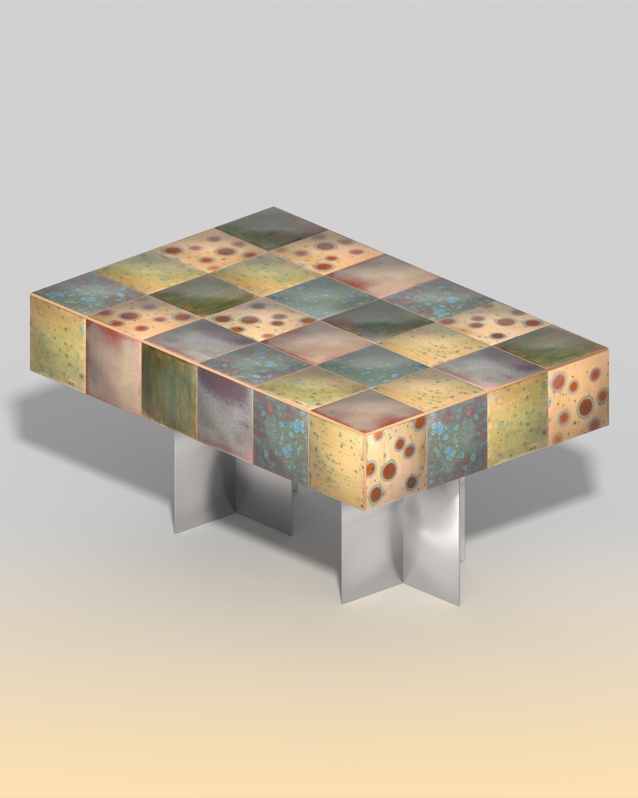
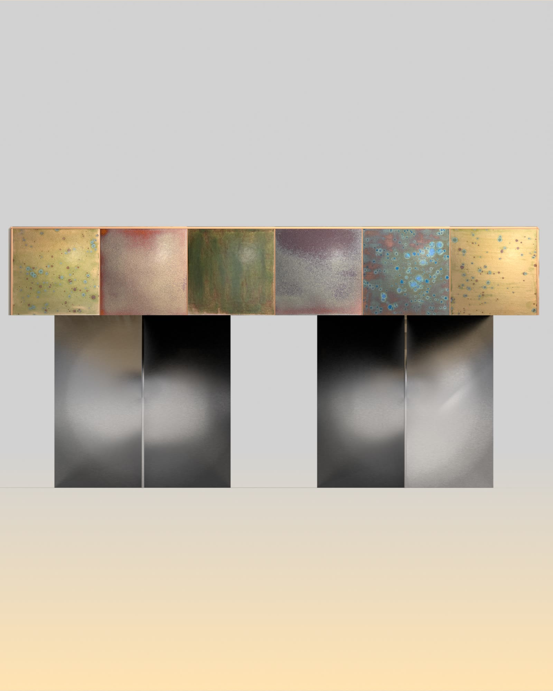
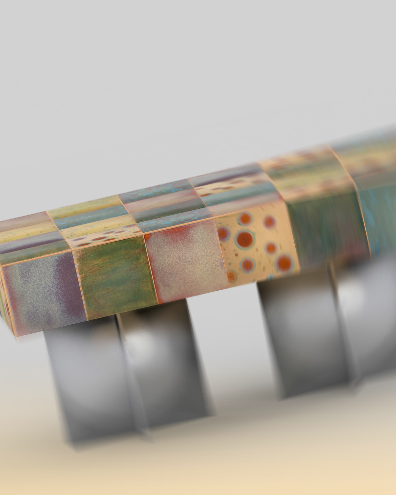
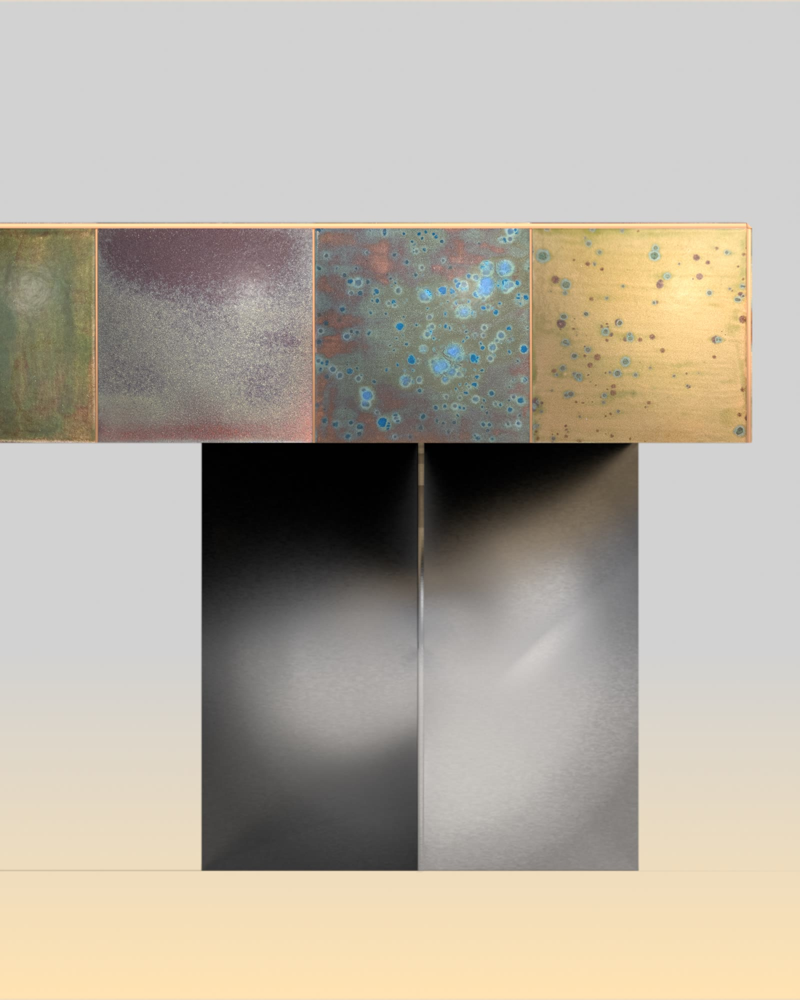
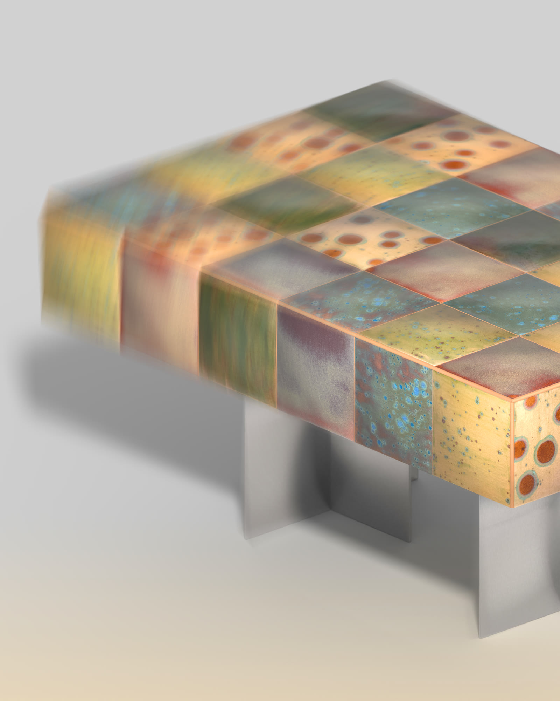

Table basse MP-01
La MP-01 est une table basse conçue comme un objet-matière. Son plateau est un damier de carreaux de cuivre, chacun patiné à la main : oxydations contrôlées qui font naître des verts, des bleus profonds, des ocres et des constellations de taches. Aucun carreau n'est identique, et le motif se prolonge sur les tranches, si bien que la couleur enveloppe entièrement le volume.
Le plateau massif repose sur un piètement en inox brossé, réduit à deux plans croisés en X. Ce contraste — la matière chaude et vivante du cuivre posée sur la froideur nette du métal — est le cœur du projet : une pièce d'expérimentation sur la couleur, les patines et les technologies de traitement des surfaces.




